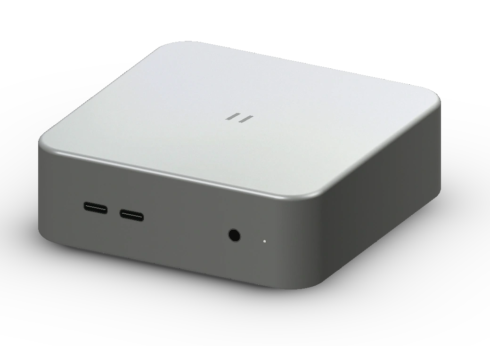

三种使用方式
从你熟悉的地方开始。
聊天协作和通用办公拟采用具备相应许可的通用主机。开发项目另有 Mac 独享专机候选。选一个入口，看看能交付什么。
配置与费用
先用一个月，
跑完一个项目。
首轮拟请 3–4 人各带一个真实任务。开通前一起确认机型、入口、项目权限和验收物。以下为讨论中的试点条件，尚未开放报名。
主机试点意向价 · 待确认
¥1,000 / 月
仅为主机费用意向。模型订阅、API 用量与商业软件许可分别核算。
- Mac 开发专机
- Mac mini M4 16 GB 内存 · 256 GB 或以上存储。客户整机独享，用于许可范围内的软件开发、构建和测试。
- 通用主机候选
- 4 核 · 16 GB 聊天和通用办公拟选 Windows 或 Ubuntu，需先确认托管、远程访问及应用许可。
- 开发工具
- Claude Code、Codex 按需配置，使用本人自有或获授权的订阅
交付与验收
拿到、验收、带走。
以下是建议写入试点约定的交付标准，每一项都可以用自己的项目当场核对。
拿到入口
收到所选入口的连接说明、系统用户或项目权限清单，以及支持方式。首次登录后，核对能看到的项目与约定一致。
跑通一次
用真实任务生成一个成果，保存到约定位置。断开再连接，检查会话记录、文件或代码提交，确认自己能继续编辑。
退出时带走
先导出文件和日志，或把代码交回已授权的仓库。确认收齐后，撤销密钥及第三方授权，按约定期限清理工作区。
不同聊天会话之间，谁能看到项目文件？
话题或频道只划分对话上下文。文件、仓库和凭据的可见范围由系统用户与项目授权决定。Mac 开发专机由一个客户独享。通用主机仅在相应许可允许时考虑分设系统用户，并用两组身份实测项目间不得互访。聊天渠道的成员权限也要单独核对。
哪些项目适合申请 Mac 开发专机？
例如从源码构建应用、运行开发期自动化测试。以 macOS Tahoe 26 许可第 3 节为例，适用的开发服务租赁每次至少连续 24 小时，最终承租客户须独占使用和控制整机及系统。启动前还须核对实际安装版本与托管许可、履行对 Apple 的预先通知，并确认客户接受适用条款。Apple 许可原文（PDF，第 3 节）
订阅和账号由谁提供？
个人试点由使用者提供自己的账号或明确获授权的订阅，并遵守各平台条款。首期范围只含个人工作环境与约定的工具配置，Team 套餐暂不提供。
电脑断线以后，哪些任务能继续？
远端主机须保持运行，任务也要能脱离本地连接继续执行。遇到人工确认、软件登录或主机重启，任务可能暂停。试用前需约定支持时段、故障处理和数据恢复方式。